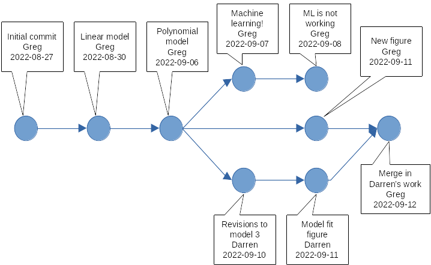

ls ~/awesomeproject/analysis_script.R
analysis_script_Darren.R
analysis_script_MLtest.R
analysis_script_final.1.R
analysis_script_final.R
analysis_script_v1.R
analysis_script_v2.R
data.csvGreg Maurer
September 1, 2022
Research can become a “garden of forking paths”
Version control records changes and helps manage the complexity
analysis_script.R
analysis_script_Darren.R
analysis_script_MLtest.R
analysis_script_final.1.R
analysis_script_final.R
analysis_script_v1.R
analysis_script_v2.R
data.csvThe researcher has gone down different paths, each resulting in a new file:
.
..
.git
analysis_script.R
data.csvThis is a Git repository for the same analysis project
analysis_script.R).git ...) help manage and version control files..git directory..git/?Git keeps track of what changed in analysis_script.R, who changed it, when it changed, and why (as long as you tell it to).

- repository: a directory with a history of changes recorded by Git, meaning it must contain a
.gitsubdirectory.- commit: Git’s basic unit of version control that records exactly which lines changed in which files, and how, plus annotations about person, time, etc.
- version: the state of repository files produced by a particular line of development that includes one or more commits to the repository
- branch: a version of repository files that diverges (with separate commits) from the main line of development (the
mainbranch) in the repository- fork: a complete copy of a Git repository that then undergoes divergent changes from the original
commit 9703620c08c304dd8cdfbc4f9ff693664d7598cb
Author: Quarto GHA Workflow Runner <quarto-github-actions-publish@example.com>
Date: Tue Sep 1 02:02:28 2026 +0000
Statistics and figures for report 1
commit b9590650100e55ecd9b9c6004fa2e979eaa10e47
Author: Quarto GHA Workflow Runner <quarto-github-actions-publish@example.com>
Date: Tue Sep 1 02:02:28 2026 +0000
Fit polynomial model
commit 3a4eed1798f86e9c735fbf8586a751046bccd394
Author: Quarto GHA Workflow Runner <quarto-github-actions-publish@example.com>
Date: Tue Sep 1 02:02:28 2026 +0000
Fit linear model to the data
commit dcabf015a2d2cbdbd9516947cc53dad71479c1bd
Author: Quarto GHA Workflow Runner <quarto-github-actions-publish@example.com>
Date: Tue Sep 1 02:02:28 2026 +0000
Initial commit - add analysis scriptgitWe will do this in the system shell. So, open a terminal with bash, zsh, or another shell (you may have installed one with Git on Windows), and then type the following command.
If you got the output above, or similar, you have Git installed and it is available with git commands in your shell. If you didn’t get that output you need to return to the setup instructions and install Git for your system.
If Git is newly installed on your system, you probably need to configure a couple of things. As you start using git commands, it helps to know that they usually follow a git verb options pattern, where verb is the action you need to take, and options give some specifics of how to do the action. For configuration, lets first, tell git who you are.
There are some differences in how computer platforms handle line endings in text files. Correspondingly, you will want to tell Git how to handle this for you, and the configuration for MS Windows machines will be different than for Mac and Linux machines. For Mac and Linux, the recommended setting is:
And for Windows it is:
Since we’ll be using GitHub, which names its repository main branches main, we should make sure our local git follows the same convention.
Finally, you might also want to configure Git to use your favorite text editor for writing commit messages. More information about that here.
You can show your Git configurations anytime with git config --list command.
Now lets make a new directory and add a text file to it. We will turn this into a Git repository in a moment.
Now that we are in our project directory, lets make it a Git repository
hint: Using 'master' as the name for the initial branch. This default branch name
hint: will change to "main" in Git 3.0. To configure the initial branch name
hint: to use in all of your new repositories, which will suppress this warning,
hint: call:
hint:
hint: git config --global init.defaultBranch <name>
hint:
hint: Names commonly chosen instead of 'master' are 'main', 'trunk' and
hint: 'development'. The just-created branch can be renamed via this command:
hint:
hint: git branch -m <name>
hint:
hint: Disable this message with "git config set advice.defaultBranchName false"
Initialized empty Git repository in /home/runner/my_repo/.git/We can use the ls -a shell command to see if we made a .git directory to to store the changes we will make to our files.
The .git/ directory is there. Now lets ask Git to tell us the status of our repository.
On branch master
No commits yet
Untracked files:
(use "git add <file>..." to include in what will be committed)
script.R
nothing added to commit but untracked files present (use "git add" to track)We are on the main branch, there are no commits yet, and there is a file that we made - script.R - that is not being tracked.
Lets tell Git to track that file. We do that with the add verb, which “stages” the file to be added to a new commit.
If we want to check the status now, we’ll see that script.R is staged to be added as a new file, under the “Changes to be committed” list.
On branch master
No commits yet
Changes to be committed:
(use "git rm --cached <file>..." to unstage)
new file: script.RThis staging step lets you compose multiple changes to your repository files into a group of updates to your history (sometimes called a change-set). When we are ready to add these changes, for us just one new file, to our git repository, we commit the changes to the repository, which will store the initial version of our file in Git’s history.
[master (root-commit) 4e8de58] Adding the first R script
1 file changed, 0 insertions(+), 0 deletions(-)
create mode 100644 script.RSooner or later we’ll add something to this file, and we’ll want to commit those changes to the repository as well. Open up your script.R file in a text editor and add a couple lines of “code”, then save this file again. After it is saved you can check your repository status with git status again.
On branch master
Changes not staged for commit:
(use "git add <file>..." to update what will be committed)
(use "git restore <file>..." to discard changes in working directory)
modified: script.R
no changes added to commit (use "git add" and/or "git commit -a")This tells us that script.R was modified, but those changes haven’t been staged yet. To get line-by-line details about what changed in your file, you can “diff” the file to show the difference between the last committed version, and what it looks like after you added some code.
diff --git a/script.R b/script.R
index e69de29..4cd5370 100644
--- a/script.R
+++ b/script.R
@@ -0,0 +1,2 @@
+Load the data...
+Fit a linear model...The lines prepended with a + show what has been added since the last commit. Lines starting with - would show you what was removed, but we haven’t removed anything. This seems like a reasonable change, so lets stage the updated file with git add and add it to our repository with git commit.
[master c9cc97f] I updated the script with 2 lines
1 file changed, 2 insertions(+)Take note that when you commit something to your repository’s history it is wise to explain what was changed using a “commit message” That is what we are doing with the -m option followed by a quoted message. Commit messages are invaluable in helping you understand how and why your repository is changing, so before you commit something, put a little thought into how you will describe the changes.
Lets take a quick look at our history now:
commit c9cc97f43e6a6a86a409a0fcae9097f09b18096e
Author: Quarto GHA Workflow Runner <quarto-github-actions-publish@example.com>
Date: Tue Sep 1 02:02:29 2026 +0000
I updated the script with 2 lines
commit 4e8de58dc6fa78c322231fd617ba45043c599c3b
Author: Quarto GHA Workflow Runner <quarto-github-actions-publish@example.com>
Date: Tue Sep 1 02:02:29 2026 +0000
Adding the first R scriptWe can see our progress so far. There are two commits, with the first adding the new script.R file, and the second one adding a couple of lines to it.
git repositories with web-based tools for working in a highly networked, collaborative wayInteract with the GitHub website with a browser
git repositories and much more.Clone or sync changes (push and pull) with GitHub repositories using git
GitHub also has a bunch of APIs, a command-line tool, GitHub Desktop…
Lets create a repository on GitHub, initialize it with some files, and then use our local git commands to pull the new repository to our computer. We can then make some changes and push them back to GitHub.
Log into https://github.com with your account credentials (or make an account if you didn’t in advance).
Press the little green button to create a new repository
Name the repository my_gh_repo
Check the box to “Add a README file”
Click the button
Now your repository is created and you should be in its landing page. To move the new repository to your local machine, you must “clone” it from GitHub. First make a place on your local machine to put the repository. Return to your system shell and make a new directory called GitHub to hold local repositories you clone from GitHub.
Now you need to use git to clone my_gh_repo from GitHub using its web address. Returning to your repository page (https://github.com/{username}/my_gh_repo), look in the top right of this repository’s landing page, and there is a button. Click it to open a dialogue that gives you the option to copy an address. Use the “HTTPS” option and press the “Copy” button to the right of the address (2 overlapping squares). The address for your repository is now in your system clipboard. Return to your shell, navigate to the GitHub directory, and git clone the repository at that address:
Cloning into 'my_gh_repo'...Now you should have a clone, or copy, of the my_gh_repo repository you just made that is ready to work with in your local GitHub/ directory. Lets enter that directory and look around.
We can see the README.md file that we created on GitHub, plus the .git folder ready and waiting for us.
Lets make some changes to our new repository on our local system. Use a text editor to open up the README.md file inside your my_gh_repo repository folder and add a couple new lines of text. Once you do, Git should notice the change when checking the repository status.
On branch main
Your branch is up to date with 'origin/main'.
Changes not staged for commit:
(use "git add <file>..." to update what will be committed)
(use "git restore <file>..." to discard changes in working directory)
modified: README.md
no changes added to commit (use "git add" and/or "git commit -a")Notice that git status now tells us the repository status in relation to the “origin”. The origin is a remote repository that your local copy is linked to, in this case the repository on GitHub that we cloned from. We can list our remote repositories, and inspect the origin with the git remote command.
origin https://github.com/gremau/my_gh_repo.git (fetch)
origin https://github.com/gremau/my_gh_repo.git (push)This tells us we have one remote repository, called origin, and we can push to and pull from this repository. We can also see some other details about branches, and where the push and pull operations will go.
* remote origin
Fetch URL: https://github.com/gremau/my_gh_repo.git
Push URL: https://github.com/gremau/my_gh_repo.git
HEAD branch: main
Remote branch:
main tracked
Local branch configured for 'git pull':
main merges with remote main
Local ref configured for 'git push':
main pushes to main (up to date)Getting back to the changes we made, if we are content with our local changes we can stage them and commit them.
[main f9c5aa7] Added two lines to the README file
1 file changed, 2 insertions(+)Great! But now our local clone of the repository has a commit that is not at the origin repository on GitHub. How do we fix this? First lets look at what git status says.
On branch main
Your branch is ahead of 'origin/main' by 1 commit.
(use "git push" to publish your local commits)
nothing to commit, working tree cleanOur local repository is one commit ahead of origin now. To bring the GitHub repository up to date, we need to git push the changes there. Note that this isn’t going to work unless you have something called a “Personal Access Token” (PAT), or have configured SSH access to GitHub. We can quickly create a PAT on GitHub with these steps (taken from here):
Go back to https://github.com - you should be logged in with your account credentials already
Open the dropdown at the very top right corner of your page to see GitHub user account options, and choose Settings.
In the left sidebar choose Developer settings
In the left sidebar (again) choose Personal access tokens
Give it a name, expiration date, and give the token repo access by checking the first check box under Select scopes
Click the button at the bottom, and then copy the resulting token to your clipboard (the copy button is the overlapping squares again).
For now, SSH access is beyond the scope of this tutorial, but it is highly recommended. See here to learn how to set up SSH access for your machine and GitHub.
Now that you have copied the token you can use git push to push the changes to origin on GitHub. You will be asked for your username and password. For the password you will paste the PAT token into the terminal.
If this is successful, the most recent commit adding two new lines to the README file will be added to the GitHub repository, thus syncing up the local and remote versions of our files.
You can copy any public repository on GitHub to your own account by “Forking” the repository. Essentially, this creates a clone of someone else’s repository for you, in your own GitHub account. To demonstrate this, lets clone the repository that contains this tutorial (jornada-im/jeds). Return to GitHub in your browser and follow these steps.
You’ll now have a fork of the “jeds” repository in your own GitHub account (your_username/jeds). In the upper left of the page, under the repository name you should see a link back to the original repository (jornada-im/jeds). Now lets clone this to our local GitHub folder and make some changes.
On your new jeds repository fork page, click the to open the dialogue, then select “HTTPS”, and copy the link to the repository (copy with the overlapping squares). Now clone that into your GitHub directory.
Cloning into 'jeds_fork'...Now you have a local copy of your fork (your_username/jeds). If you want to interact with the original repository (jornada-im/jeds) then we need to make sure there is a link to that. Lets go to that repository
and check the status of our remote repositories.
origin https://github.com/gremau/jeds.git (fetch)
origin https://github.com/gremau/jeds.git (push)It looks like our only “remote” repository is our fork on GitHub (your_username/jeds). This is OK, but not ideal for collaboration purposes. It would be better if we also had the original repository (jornada-im/jeds) configured as an “upstream” source repository. This way, we could pull any changes made to the source repository directly into our local clone. Instead, we currently need to do this indirectly through GitHub. There are several ways to configure an upstream source repository (see methods in Happy Git for example), but we’re going to set that aside today and focus on the simplest possible method to make changes.
Lets continue by making some changes to a local file in our fork of the jeds repository. Before we do this, we should create a branch to make the changes in. A branch is a separate, named path of development within a repository. When we create a branch and make changes in it, they do not effect the main branch until we decide to merge them in. Creating and working with branches in git is simple, just create a new named branch and then git checkout the branch to begin work there.
You could also use a shorthand command for this - git checkout -b my_changes. We have now created a branch within our repository, called my_changes that we can develop without changing anything in main. This is a great way to partition your changes until you are sure your changes work well with the rest of the repository.
Now lets make those changes. Look inside the docs/lessons folder and find the learner_changes.md file.
data-viz-with-ggplot.qmd
git-and-github-for-research.qmd
img
learner_changes.md
setup.qmd
statistical-inference-linear-and-mixed.qmd
teaching-datasets.qmdOpen this file in a text editor and and correct some of the problems in the spelling or the code. Save your changes and then stage and commit the changes.
[my_changes 4ad566d] I made this file better
1 file changed, 2 insertions(+)We have committed the changes to the my_changes branch. If we want to share these changes, the new branch will need to be accessible to others in the forked GitHub repository (your_username/jeds). To publish the my_changes branch to GitHub we can use a variation on git push that creates an “upstream” branch in the origin repository (again - your_username/jeds).
Now if we return to GitHub, we can see that the new branch has been added to the repository there, and it will contain any changes we made to docs/lessons/learner_changes.md. If we want to contribute the changes in our new branch back to the source repository (jornada-im/jeds), we can issue something called a “pull request” in GitHub, which notifies the maintainer of the source repository that somebody wants to merge changes into it.
When you have made changes to a forked repository on GitHub, you have the opportunity to contribute those back to the source repository. GitHub makes this operation, called a “Pull request,” available in a number of ways.
Return to your fork of the jeds repository on GitHub (https://github.com/{your_username}/jeds) and look for the my_changes branch. By default you will be viewing the main branch, which should be apparent in the dropdown menu to the top left of your repository’s code. You may also see a banner notification about the recent push to the my_changes branch that you just did. To view the my_changes branch, you can either follow the link in the banner, or use the dropdown to select the my_changes branch.
Once you select the new branch, the repository page will change slightly and you can now view all files in my_changes. If you like, open docs/lessons/learner_changes.md to see that your modifications to the file are there (they are not in main). You will also notice a banner above the code that says “This branch is 1 commit ahead of jornada-im:main” with options to “Contribute” or “Sync.” This is telling you that the my_changes branch in your fork has one commit that is not present in the original source you forked from, the main branch of jornada-im/jeds. To contribute your changes back to this source, you can issue a pull request by clicking the “Contribute” dropdown and selecting the button.
When you open the pull request, notice that the new pull request template opens in the jornada-im/jeds repository. GitHub will then check whether your branch can be merged into the main branch of this source repository. If it can, you will see the exact changes that will be made, and you have the opportunity to add a comment that will be seen by the person who will receive your pull request (whoever maintains the source repository, in this case Greg). When you have provided your comments and reviewed the pull request press and the maintainer of jornada-im/jeds will be able to respond to it by making further comments/requests, merging it into the source repository, or rejecting it.